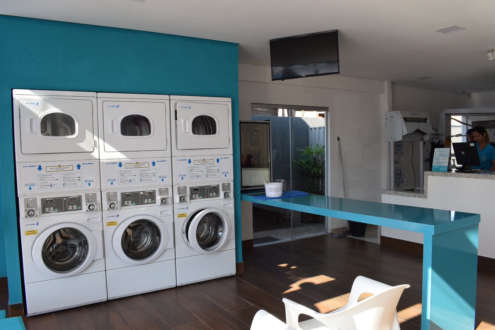

Lavagem e Secagem: Roupas, lençóis, toalhas e muito mais. Garantimos a limpeza eficiente e o tratamento delicado de suas peças.
Passadoria: Deixe as roupas impecáveis e prontas para o uso, sem o trabalho de passar.
Limpeza a Seco: Para peças mais delicadas que exigem cuidados especiais, como ternos, vestidos e roupas de lã.
Retirada e Entrega: Comodidade total! Coletamos e entregamos suas roupas no endereço que você preferir.
Tratamento de Manchas: Se você tem manchas difíceis, podemos tratá-las com técnicas especializadas para garantir que suas roupas fiquem como novas.

Imagem ilustrativa dos serviços oferecidos.
Autor: Kalebe J.S